|
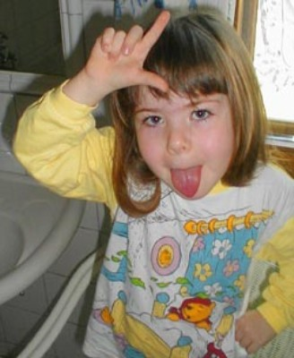Names in this article have been changed to protect the identities of patients, parents, and healthcare professionals who wish to remain anonymous. AutismDr. Molly McButter, Ph.D., is a much sought-after child psychologist working near Stanford University in Palo Alto, California. For the past several years, she's been counseling a suspiciously large number of well-to-do (but freaked out) moms and dads living in the Bay Area. They come to her from different cities and unique socioeconomic backgrounds, but they do have one thing in common: their kids have all started acting funny. "Tommy," age two and a half, suddenly stopped recognizing his parents and 5-year-old sister. Instead of responding when called to, he'd sway back and forth in slow circles, pausing only to bonk his head repeatedly against a ceramic dog bowl. One day he ceased making eye contact with his family members altogether. He'd drag his head across the floor, walk on his toes, make odd gurgling sounds, and spend long hours filling and emptying buckets of sand in the sandbox. Then the screaming began; he'd wail inconsolably at all hours of the day and night, refusing to be held or comforted in any way. Shortly thereafter, he developed chronic diarrhea. Tommy's mother compared this incomprehensible phenomenon to someone coming into her perfectly healthy son's bedroom in the night, stealing his personality and ability to communicate, and then leaving behind the empty cardboard box of an utterly bewildered child. 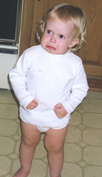At age six, "Kelly" developed some eccentric habits of her own. She began tugging uncomfortably at the collar of her shirt or the footpads of her pajama bottoms. Sometimes she'd go as far as to rip all her clothes off during an otherwise routine trip to Safeway. At the corner Blockbuster, Kelly would windmill both of her arms and run sweeping down the aisle, knocking entire racks of video boxes onto the floor. When this caused a scene, she too would scream and lash out with her fists, biting her father and lifting up her shirt to bare her bee-stung breasts at flabbergasted customers. At home, she'd refuse to sleep more than a few minutes at a time. She began urinating in the fireplace and all four corners of the hardwood family room floor, making an exaggerated show of it whenever company came over for extended periods of time -- to the understandable consternation and embarrassment of her parents. 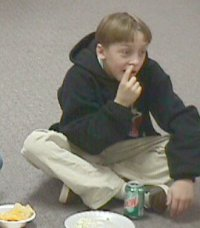And when "Harrison" reached the age of ten, his mother and father could no longer deny the disparity between his development and that of other children his age. He seemed to exist alternately in one of two possible states: passed out and sound asleep, or running tirelessly around the house from room to room wearing different wigs and clanging iron pots together. He developed an obsessive, breakfast time fascination with the Pocahontas-style illustration of the Indian princess on the Land O'Lakes spreadable butter tub. He would kick chairs, curse and shriek, and throw forks whenever it was time for her to return to the refrigerator. On his birthday, Harrison crept into his father's room as he lay sleeping, and stabbed him in the buttocks with a turkey thermometer. After a battery of tests, these children were diagnosed with varying degrees
of autism, and Dr. McButter herself was responsible for delivering the
bad news. She knows firsthand that the medical and psychiatric literature covering
autism employs daunting words like "hopeless" and disparaging phrases
like "no known treatment". Autism is a disorder which can seize upon
someone instantly, or sneak up on them over the course of many months. It hinders
the development of a person's ability to communicate, interact with other people
and maintain normal contact with the outside world. When parents learn their child is autistic, they describe it as one of the most traumatic, stressful events of their lives. Non-autistic people see autism as an enormous tragedy, and mothers and fathers alike experience continuing disappointment and grief at nearly all stages of an autistic child's life. Mostly this grief stems from profound sorrow over the loss of the "normal" child they'd been hoping for. In forty-eight states, one out of every 500 children has been diagnosed with autism. But two regions in the two remaining states -- the California Bay Area and a borough of New Jersey -- stand out: the ratio is a disturbing one in 250. Studies of the New Jersey phenomenon suggest contributing factors like environmental toxins and genetic predisposition, but age attributes of the mothers also apply. Teen mothers, as well as women in their thirties or forties are more likely to produce autistic children than a female in her twenties. New theories attempting to reconcile explanations for the Silicon Valley autism phenomenon are more sinister, and they've begun to orbit around moms and dads who met each other online. Before we explore that, let's turn our attention to the animal world for just a moment. Specialized dog factories offering their customers purebred terriers, greyhounds, German shepherds and the like are in the inbreeding business. It's been long understood that any sufficiently advanced mammal species requires a more dynamic population source. From the standpoint of maintaining a genetically healthy stock, limited mating options guarantee progressive genetic degeneration, brittle bones, deafness, heart problems and a substantial loss of vigor. Any one of these disabilities alone can saddle dog owners with the unhappy responsibility of wrangling unhealthy pets. But if you go to the Humane Society and adopt a dog, you're likely to find -- pardon the term -- 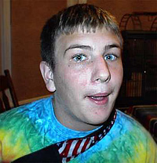a mutt, a mixed breed dog with rich, colorful DNA. These dogs are profoundly smarter, better adjusted to living with humans, and far more loving than their blue blooded cousins. In large cities, the men and women who hook up in bars get together because they find each other cute. Successful unions between such couples are more likely to produce cute kids with healthy, happy genes. After all, they're the output of parents who ostensibly came together with no 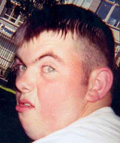similar genetic markers beyond physical appearance. Their offspring are mutts as well, and statistically predisposed to a healthier, happier life. In smaller cities (or rural areas where sexual intercourse is the preferred method of passing time because nobody has a car or a computer to escape the tedium of everyday life) people of similarly limited characteristics mix and mingle in a woefully homogenous petri dish. Such a localized gene pool is tantamount to a single block of low-income housing: there's far less opportunity for the population to enjoy the diversity required to encourage evolution, 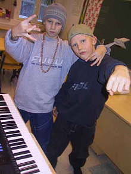and there's a much greater chance of propagating genetic defects. The Internet as we know it is more of a puddle than a massive, unwieldy universe. Online portals like Orkut, Friendster, Tribe.Net, MySpace, Nerve, and Craigslist which foster the illusion of value by belonging to privatized, incestuous "communities" are inbreeding a new generation of individuals with genetic markings nearly identical to those of autism -- and its lesser cousin Asperger's. 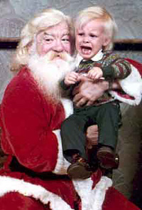Asperger's syndrome is a Pervasive Development Disorder (PDD) characterized by severe and sustained impairment with social interaction. Adults with Asperger's have trouble feeling empathy for others, especially when it comes to decoding social cues like gestures, facial expressions and body language. Normal communicative behaviors like humor or the emotional nuances of sarcasm, idioms or metaphors are often wholly lost on sufferers of Asperger's. Relationship issues depicted in books, movies, and television programs will not be understood. While their reading recognition skills are excellent, language comprehension remains weak -- and it cannot be assumed that they fully understand what they so fluently read. People with autism and Asperger's can often be egocentric, meaning that in some cases they find it difficult to believe other people actually have their own thoughts, feelings, or opinions of their own. The pervasiveness of individual thoughts, feelings, and opinions in tech-savvy metropolitan areas (like Silicon Valley) might be cause for alarm. Steve Silberman, a Wired magazine reporter examined the autism phenomenon several years ago, limiting his focus primarily to men and women working in the software industry: "It's a familiar joke that many of the hardcore programmers in IT strongholds like Intel, Adobe, and Silicon Graphics -- coming to work early, leaving late, sucking down Big Gulps in their cubicles while they code for hours -- are residing somewhere in Asperger's domain. Kathryn Stewart, director of the Orion Academy, a high school for high-functioning kids in Moraga, California, calls Asperger's syndrome the engineers' disorder. Bill Gates is regularly diagnosed in the press: His single-minded focus on technical minutiae, rocking motions, and flat tone of 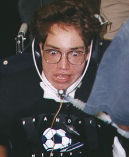voice are all suggestive of an adult with some trace of the disorder. In Microserfs, novelist Douglas Coupland observes, 'I think all tech people are slightly autistic.'" In January of 2001, Microsoft became the first major US corporation to offer its employees insurance benefits to cover the cost of behavioral training for their autistic children. But elsewhere, a building army of autistic offspring threatens to bankrupt families, school systems and states nationwide. Federal law mandates that special-needs students be removed from traditional classrooms and stationed inside the portables at the far, far end of the football field where they can receive specialized tutoring. Such a law requires hiring more expensive teachers (those with master's degrees in special education) who wrangle classrooms of five students as opposed to twenty-five. These classrooms also include deaf and blind students, children with head injuries or learning disabilities like dyslexia, severe emotional disorders or bipolar conditions. The alternative to this arrangement is equally expensive: a privatized care facility where you can park your kid in front of construction paper for the day. Meanwhile, as more and more women step up to claim their rightful place in online communities by blogging themselves silly, pumping up their perceived street value with mutually fanatical, hyperactive and hug-heavy "testimonials," e-viting one another into their electroclash pilates tribes, staging impromptu stitch-n-bitch knitting circles or hosting day-long Burning Man "decompression" parties, mentally obtuse men and boys who might never have found a compatible female partner suddenly discover they can hurl an iPod out the window and crack one square in the head with increasing accuracy. As long as men and women continue to meet online based exclusively on shared interests, the mental stability of future generations remains in grave peril -- and new technologies will need to be developed to keep them alive. 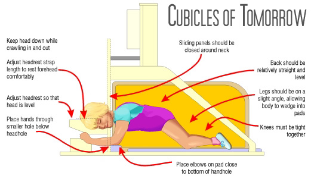Office furniture, for instance, may need to be ergonomically redesigned to take advantage of the Hug Box, a three-dimensional calming mechanism developed specifically for autism sufferers. In cooperation with noted researcher Temple Grandin, the Hug Box is an ingenious pressurized snuggle system used for deep touch stimulation, producing a calming effect on autistic or otherwise attention deficient individuals. Hug Boxes are already being used in schools, clinics, and homes around the world. Each machine is 60" tall, 60" long and 32" wide, constructed from 13-grade 3/4" birch plywood which is sealed and lacquered for a smooth durable finish. All edges are rounded to ensure safety. The air controls are of outstanding quality and multiple safety devices are included. Remaining components are fashioned from wood, metal, and plastic. The overall look is that of traditional office cubicle, with a classy, contemporary style suitable for those working in the software, Internet, gaming or design industry. 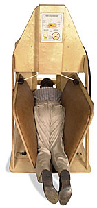The operator places his head in the top area, against soft fuzzy padding. His hands slide through the bottom opening to manipulate a keyboard or control joystick. As the furry side panels close in at a slow pace, overstimulated nerves become calm. Employees who previously paced, panted or hid under their desks during a morning meeting will soon be able to make their way to the conference room in a much calmer state -- without the use of a plastic mouth guard or ironcage safety 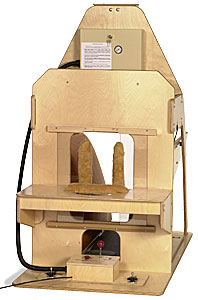helmet. The Hug Box, adjustable in many ways, can be used by software engineers, QA testers, videogame "producers," artistic "directors," and special needs students. The machine has a series of slots and holes to accommodate a laptop, a 12-oz cup of coffee, a 17" flat-panel display, and either a softcover O'Reilly reference or a rolled-up yoga mat. There are also slots which adjust the arm rests, sliders which allow for oversized head girths, and a hands-free speaker phone. In time, rather than clamoring for standup videogame units, Segways or Air Hockey tables, tomorrow's crop of autistic office workers borne of Orkut-sanctioned relationships or Friendster-branded marital unions will undoubtedly learn to love their complementary Hug Boxes. In a nation of eight million socially impaired Rain Mans unable to make human connections, at least everyone involved can boast they're a very good driver. The U.S. Department of Education recorded a nationwide autism increase of 600 percent between 1992 and 2004. The average child with autism will require $8 million in lifetime supervision and care. It's a disability with a normal life expectancy affecting boys five times more than girls -- although girls are more severely affected. In the United States, over one million individuals live with autism, making it more prevalent than Down Syndrome, diabetes, and cancer combined. |